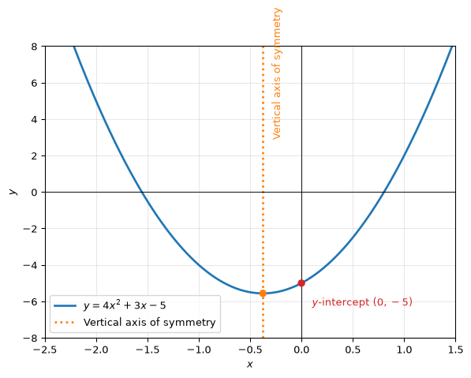

Linear to quadratic and back - the entire flow
Linear relationships and equations
General equation and the shape of the graph
A linear relationship between two quantities can be expressed in the form y = mx + b, where m is the slope and b is the y-intercept; or in the form Ax + By + C = 0, where A, B, and C are constants.
The graph of a linear relationship is a straight line
General Equation and Graph
A linear relationship between two quantities can be written as
y = mx + c,
where m is the slope and c is the y-intercept. It can also be written in standard form as
Ax + By + C = 0,
where A, B, and C are constants. The graph of a linear relationship is a straight line.
Plotting a Linear Graph
To plot the graph of a linear relationship:
- Substitute several values of x into the equation to calculate the corresponding values of y.
- Plot the resulting points (x, y) on a coordinate plane.
- Join the points with a straight line.
The intercepts are also useful:
- The x-intercept occurs when y = 0. For y = mx + c, solve mx + c = 0.
- The y-intercept occurs when x = 0. Substituting x = 0 into y = mx + c gives y = c, so the point is (0, c).
Thus, the graph of the relationship y = mx + c crosses the x-axis at the solution of the equation mx + c = 0 and crosses the y-axis at (0, c).
Finding the Slope
The slope indicates the steepness and direction of a line:
- m > 0: the line rises from left to right.
- m < 0: the line falls from left to right.
- m = 0: the line is horizontal.
- A vertical line has an undefined slope.
From a Graph
Choose two points on the line and calculate rise over run, including the signs of both changes.
From an Equation
Rearrange Ax + By + C = 0 into the form y = mx + c:
y = -\frac{A}{B}x - \frac{C}{B}.
Therefore, the slope is
m = -\frac{A}{B}.
From Two Points
For the points (x_1, y_1) and (x_2, y_2), the slope is
m = \frac{y_2 - y_1}{x_2 - x_1}, \qquad x_1 \ne x_2.
Finding the Equation from Two Points
Given two points:
- Calculate the slope using m = \frac{y_2 - y_1}{x_2 - x_1}.
- Substitute either point into y = mx + c and solve for c.
- Write the equation of the line as y = mx + c.
Alternatively, substitute both points into y = mx + c to form
y_1 = mx_1 + c, \qquad y_2 = mx_2 + c,
and solve the simultaneous equations for m and c.
Solving Two Simultaneous Linear Equations
For equations in the form Ax + By + C = 0, use substitution or elimination.
If one equation is already in the form y = mx + c, substitute this expression for y into the other equation.
For two equations in slope-intercept form,
y = m_1x + c_1, \qquad y = m_2x + c_2,
the point of intersection satisfies both equations. Therefore,
m_1x + c_1 = m_2x + c_2.
If m_1 \ne m_2, the x-coordinate of the intersection is
x = \frac{c_2 - c_1}{m_1 - m_2}.
Cases for the Number of Solutions
- If m_1 \ne m_2, the lines meet at exactly one point.
- If m_1 = m_2 and c_1 \ne c_2, the lines are parallel and there is no solution.
- If m_1 = m_2 and c_1 = c_2, the lines are identical and there are infinitely many solutions.
- If c_1 = c_2 and m_1 \ne m_2, the intersection is on the y-axis at (0, c_1).
Quadratic Relationships and Equations
General Equation and Graph
The general form of a quadratic relationship is
y = ax^2 + bx + c, \qquad a \ne 0.
Its graph is a parabola:
- If a > 0, the parabola opens upwards and has a minimum point.
- If a < 0, the parabola opens downwards and has a maximum point.
- The parabola is symmetric about a vertical line through its vertex.
- When x = 0, y = c, so the y-intercept is (0, c).
To find another point with the same y-coordinate as the y-intercept, set y = c:
ax^2 + bx + c = c \quad\Longrightarrow\quad x(ax + b) = 0.
Thus, x = 0 or x = -\frac{b}{a}. These points are symmetric about the axis of symmetry, so the axis has equation
x = -\frac{b}{2a}.
This is also the x-coordinate of the vertex. Substituting it into the quadratic gives the vertex
\left(-\frac{b}{2a},\, \frac{4ac - b^2}{4a}\right).
The x-intercepts are found by setting y = 0:
ax^2 + bx + c = 0.
The solutions of this quadratic equation are the x-coordinates where the parabola crosses the x-axis. Once these solutions, the vertex, and the y-intercept are known, the graph can be sketched.
--------------------------------------------------------------------------- ValueError Traceback (most recent call last) File ~\AppData\Local\Python\pythoncore-3.14-64\Lib\site-packages\matplotlib\backend_bases.py:2257, in FigureCanvasBase.print_figure(self, filename, dpi, facecolor, edgecolor, orientation, format, bbox_inches, pad_inches, bbox_extra_artists, backend, **kwargs) 2254 # we do this instead of `self.figure.draw_without_rendering` 2255 # so that we can inject the orientation 2256 with getattr(renderer, "_draw_disabled", nullcontext)(): -> 2257 self.figure.draw(renderer) 2258 else: 2259 renderer = None File ~\AppData\Local\Python\pythoncore-3.14-64\Lib\site-packages\matplotlib\artist.py:94, in _finalize_rasterization.<locals>.draw_wrapper(artist, renderer, *args, **kwargs) 92 @wraps(draw) 93 def draw_wrapper(artist, renderer, *args, **kwargs): ---> 94 result = draw(artist, renderer, *args, **kwargs) 95 if renderer._rasterizing: 96 renderer.stop_rasterizing() File ~\AppData\Local\Python\pythoncore-3.14-64\Lib\site-packages\matplotlib\artist.py:71, in allow_rasterization.<locals>.draw_wrapper(artist, renderer) 68 if artist.get_agg_filter() is not None: 69 renderer.start_filter() ---> 71 return draw(artist, renderer) 72 finally: 73 if artist.get_agg_filter() is not None: File ~\AppData\Local\Python\pythoncore-3.14-64\Lib\site-packages\matplotlib\figure.py:3282, in Figure.draw(self, renderer) 3279 # ValueError can occur when resizing a window. 3281 self.patch.draw(renderer) -> 3282 mimage._draw_list_compositing_images( 3283 renderer, self, artists, self.suppressComposite) 3285 renderer.close_group('figure') 3286 finally: File ~\AppData\Local\Python\pythoncore-3.14-64\Lib\site-packages\matplotlib\image.py:133, in _draw_list_compositing_images(renderer, parent, artists, suppress_composite) 131 if not_composite or not has_images: 132 for a in artists: --> 133 a.draw(renderer) 134 else: 135 # Composite any adjacent images together 136 image_group = [] File ~\AppData\Local\Python\pythoncore-3.14-64\Lib\site-packages\matplotlib\artist.py:71, in allow_rasterization.<locals>.draw_wrapper(artist, renderer) 68 if artist.get_agg_filter() is not None: 69 renderer.start_filter() ---> 71 return draw(artist, renderer) 72 finally: 73 if artist.get_agg_filter() is not None: File ~\AppData\Local\Python\pythoncore-3.14-64\Lib\site-packages\matplotlib\axes\_base.py:3367, in _AxesBase.draw(self, renderer) 3364 if artists_rasterized: 3365 _draw_rasterized(self.get_figure(root=True), artists_rasterized, renderer) -> 3367 mimage._draw_list_compositing_images( 3368 renderer, self, artists, self.get_figure(root=True).suppressComposite) 3370 renderer.close_group('axes') 3371 self.stale = False File ~\AppData\Local\Python\pythoncore-3.14-64\Lib\site-packages\matplotlib\image.py:133, in _draw_list_compositing_images(renderer, parent, artists, suppress_composite) 131 if not_composite or not has_images: 132 for a in artists: --> 133 a.draw(renderer) 134 else: 135 # Composite any adjacent images together 136 image_group = [] File ~\AppData\Local\Python\pythoncore-3.14-64\Lib\site-packages\matplotlib\artist.py:71, in allow_rasterization.<locals>.draw_wrapper(artist, renderer) 68 if artist.get_agg_filter() is not None: 69 renderer.start_filter() ---> 71 return draw(artist, renderer) 72 finally: 73 if artist.get_agg_filter() is not None: File ~\AppData\Local\Python\pythoncore-3.14-64\Lib\site-packages\matplotlib\text.py:853, in Text.draw(self, renderer) 849 return 851 renderer.open_group('text', self.get_gid()) --> 853 bbox, info, _ = self._get_layout(renderer) 854 trans = self.get_transform() 856 # don't use self.get_position here, which refers to text 857 # position in Text: File ~\AppData\Local\Python\pythoncore-3.14-64\Lib\site-packages\matplotlib\text.py:479, in Text._get_layout(self, renderer) 477 clean_line, ismath = self._preprocess_math(line) 478 if clean_line: --> 479 w, h, d = _get_text_metrics_with_cache( 480 renderer, clean_line, self._fontproperties, 481 ismath=ismath, dpi=self.get_figure(root=True).dpi) 482 else: 483 w = h = d = 0 File ~\AppData\Local\Python\pythoncore-3.14-64\Lib\site-packages\matplotlib\text.py:59, in _get_text_metrics_with_cache(renderer, text, fontprop, ismath, dpi) 52 get_text_metrics = _get_text_metrics_function(renderer) 53 # call the function to compute the metrics and return 54 # 55 # We pass a copy of the fontprop because FontProperties is both mutable and 56 # has a `__hash__` that depends on that mutable state. This is not ideal 57 # as it means the hash of an object is not stable over time which leads to 58 # very confusing behavior when used as keys in dictionaries or hashes. ---> 59 return get_text_metrics(text, fontprop.copy(), ismath, dpi) File ~\AppData\Local\Python\pythoncore-3.14-64\Lib\site-packages\matplotlib\text.py:125, in _get_text_metrics_function.<locals>._text_metrics(text, fontprop, ismath, dpi) 120 raise RuntimeError( 121 "Trying to get text metrics for a renderer that no longer exists. " 122 "This should never happen and is evidence of a bug elsewhere." 123 ) 124 # do the actual method call we need and return the result --> 125 return local_renderer.get_text_width_height_descent(text, fontprop, ismath) File ~\AppData\Local\Python\pythoncore-3.14-64\Lib\site-packages\matplotlib\backends\backend_agg.py:259, in RendererAgg.get_text_width_height_descent(self, s, prop, ismath) 256 return super().get_text_width_height_descent(s, prop, ismath) 258 if ismath: --> 259 parse = self.mathtext_parser.parse(s, self.dpi, prop) 260 return parse.width, parse.height, parse.depth 262 font = self._prepare_font(prop) File ~\AppData\Local\Python\pythoncore-3.14-64\Lib\site-packages\matplotlib\mathtext.py:86, in MathTextParser.parse(self, s, dpi, prop, antialiased) 81 from matplotlib.backends import backend_agg 82 load_glyph_flags = { 83 "vector": LoadFlags.NO_HINTING, 84 "raster": backend_agg.get_hinting_flag(), 85 }[self._output_type] ---> 86 return self._parse_cached(s, dpi, prop, antialiased, load_glyph_flags) File ~\AppData\Local\Python\pythoncore-3.14-64\Lib\site-packages\matplotlib\mathtext.py:100, in MathTextParser._parse_cached(self, s, dpi, prop, antialiased, load_glyph_flags) 97 if self._parser is None: # Cache the parser globally. 98 self.__class__._parser = _mathtext.Parser() --> 100 box = self._parser.parse(s, fontset, fontsize, dpi) 101 output = _mathtext.ship(box) 102 if self._output_type == "vector": File ~\AppData\Local\Python\pythoncore-3.14-64\Lib\site-packages\matplotlib\_mathtext.py:2306, in Parser.parse(self, s, fonts_object, fontsize, dpi) 2304 result = self._expression.parse_string(s) 2305 except ParseBaseException as err: -> 2306 raise ValueError("\n" + err.explain(0)) from None 2307 self._state_stack = [] 2308 self._needs_space_after_subsuper = False ValueError: \left(\frac{-3-\sqrt{89}}8,0\right) ^ ParseSyntaxException: Expected \frac{num}{den}, found '{' (at char 11), (line:1, col:12)
<Figure size 672x480 with 1 Axes>Solving a Quadratic Equation by Completing the Square
Start with
ax^2 + bx + c = 0, \qquad a \ne 0.
- Divide by a: x^2 + \frac{b}{a}x + \frac{c}{a} = 0.
- Rearrange the constant term: x^2 + \frac{b}{a}x = -\frac{c}{a}.
- Add \left(\frac{b}{2a}\right)^2 to both sides: x^2 + \frac{b}{a}x + \left(\frac{b}{2a}\right)^2 = \left(\frac{b}{2a}\right)^2 - \frac{c}{a}.
- Write the left-hand side as a square and simplify the right-hand side: \left(x + \frac{b}{2a}\right)^2 = \frac{b^2 - 4ac}{4a^2}.
- Take the square root of both sides: x + \frac{b}{2a} = \pm\frac{\sqrt{b^2 - 4ac}}{2a}.
- Solve for x: \boxed{x = \frac{-b \pm \sqrt{b^2 - 4ac}}{2a}}.
Solving a Quadratic Curve and a Line
Consider the quadratic curve
y = ax^2 + bx + c_1
and the line
y = mx + c_2.
At a point of intersection, both equations have the same y-value. Equating them gives
ax^2 + bx + c_1 = mx + c_2.
Rearranging gives the quadratic equation
ax^2 + (b - m)x + (c_1 - c_2) = 0.
The solutions of this equation are the x-coordinates of the intersection points. The corresponding y-coordinates can then be found by substituting each x-value into either original equation.